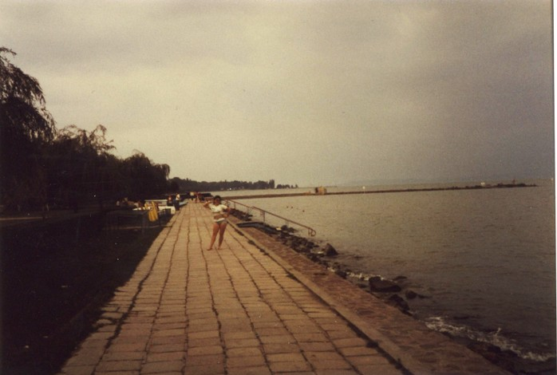

Inter Rail 1984 Day 8
Sunday 9th September 1984
Woken up by unearthly buzzing noise of Jon's alarm clock. Mine went off 2 minutes later. Got up, washed and dressed, said goodbye to Mr Man and were enroute to the station by 6.30am. Got the bus to Keleti Pu and the underground to Deli Pu. Got our tickets stamped to Keszthely and waited for the train to arrive. It had not arrived by 7.30am so we got worried. Eventuially we found out that that train stopped running on August 26th so had to catch the 8.00am to Siófok.

We were supposed to arrive at 16.00pm but got there about 15 minutes late. There was a distinct lack of platforms i.e. everyone wanders across the lines to get on and off the trains. The carriages were functional if not comforable. The guard was confused by the Inter Rail tickets and didn't even stamp them.The weather was bleah - no sun but lots of cloud.
On arrival at Siófok we found that with it being a Sunday the information desk was closed. Headed off into town proper and luckily found ourselves outside an IBUSZ office. No-one inside spoke any English but one girl did speak some French so I found myself having a French conversation in the middle of Hungary. They had no beds available so they sent us to the Bureau of Tourisme across the road.
Found a girl who spoke good English. Got a room at the house of one of the workers in the Bureau. Got taken to it in a taxi which became yet another form of transport not paid for. The room had a single and double bed plus a wardrobe, chair and a table lamp on a table. It cost us 400ft for the two of us i.e. £3.17 each a night. We also got use of the kitchen and bathroom and 2 loos, one of which has the hole at the back in the pan like most normal loos.
Had brunch - bread, butter, cheese and salami/spam/jam. Then Mrs Woman brought our passports and forms back with the address changed. Went to the IBUSZ office to change some money so we could buy a meal tonight. Went on along the street until we came to a river and headed lakewards. Lake Balaton is the largest lake in Central Europe.
A quick sit on the end of the breakwater watching the sailing boats then back to the bar where we found beer at 20p a pint. The best description would be wet, cold and alcoholic.
The sun came out so back to the house for bathers and shorts. Found you had to pay to get to the swimming areas so we sat on the grass near the breakwater. Eventually a little man in a uniform on a bike appeared to tell us that the sign we'd ignored said "Keep of the grass". In doing so he disturbed our sleep and postcard writing.
We sauntered off to our room moaning about Mrs Forints and the fact that everything you do you seem to have to pay for. Got changed and found we had British neighbours - 2 lads from Scotland so swapped notes with them about places including the new Vienna YHA. Went out to dinner. Jon's height got commented upon. Tried desperately to order a cheap meal for 2 people but everything on the menu seemed to be off.
In the end we ended up having what the waiter suggested which was the speciality of the house. It was expensive by Hungarian standards but otherwise cheap. Steak topped with onions, mushrooms and tomatoes with a cheese coated ham covering all on the base of the usually dressed salad plus chips and rice. Washed it down with Czechoslovakian beer which was quite nice. We added that to our samping of East German and Polish beer. Nicked off to bed early as we were knackered after our early start.